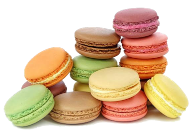
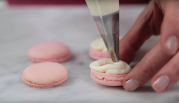

PREP-
COOK TIME-
YIELD-
1 hour
15 minutes
12-15 macarons
INGREDIENTS
macaron shells
• 3/4 cup almond flour
• 1 cup confectioners’ sugar
• 2 large egg whites, at room temperature
• 1/4 cup granulated sugar
• 1/2 teaspoon pure vanilla extract
vanilla buttercream filling
• 1/4 cup unsalted butter
• 3/4 cup and 2 tablespoons confectioners’ sugar
• 1 teaspoon milk
• 1/2 teaspoon pure vanilla extract
INSTRUCTIONS
macaron shells
1. Combine almond flour and confectioners’ sugar in a bowl and whisk together. Pass mixture through a fine-mesh sieve, pressing down on clumps.
2. In a large bowl, beat the egg whites using a hand-mixer or stand-mixer on medium speed for 2 minutes until soft peaks form. Add the granulated sugar and beat on high for 2 more minutes until stiff, glossy peaks form.
3. Add vanilla and beat on high for another 30 seconds.
4. Gently fold in dry ingredients and repeat until mixture is smooth and shiny, (with no visible dry ingredients) and begins to run a little but not too runny. Think lava consistency. Do not overfold.
5. Take a pastry bag fitted with a 1/2 inch round tip and fill with the batter.
6. Line 2 baking sheets with parchment paper and pipe batter into 3/4-inch round circles, 1 inch apart.Tap the baking sheet firmly against the counter to release any air bubbles.
7. Let stand at room temperature for 30 minutes until they form a skin.
8. Preheat oven to 325 F.
9. Bake for 10-12 minutes, rotating halfway, until cookies have risen and just set. The cookies should be able to just come off the baking sheet when you try to lift them.
Let cool for 5 minutes then transfer to wire rack and let cool completely.
vanilla buttercream filling

1. Using a hand mixer or a stand mixer, cream butter until soft and smooth.
2. Add powdered sugar, milk, and vanilla and mix until light and fluffy.
make the macarons
1. Transfer the buttercream filling into a piping bag with a round tip.
2. Pipe a swirl of filling on half the cookies.
3. Sandwich cookies together with the remaining halves.
original recipe by :
https://www.aheadofthyme.com/2017/02/classic-french-macaron-with-vanilla-buttercream-filling/